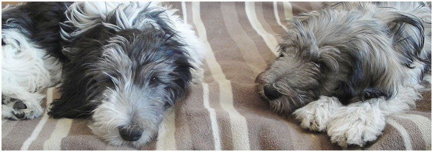
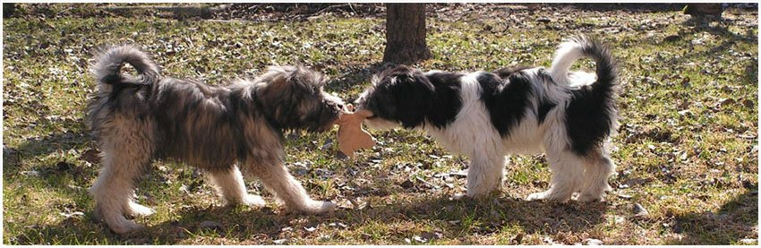

Polskie owczarki nizinne, czyli PON’y to jedna z naszych pięciu rodzimych ras, która zrobiła światową karierę! Jej historia sięga aż XIII wieku, kiedy do Polski zostały sprowadzone pierwsze psy pasterskie. Były one przez wiele pierwszych lat psami użytkowymi, a dopiero później dostrzeżono ich walory.
PON to pies średniej wielkości o prostokątnej sylwetce i muskularnej budowie oraz bardzo obfitej, dwuwarstwowej sierści składającej się z szorstkiego w dotyku, falistego włosia. Jego długie włosy tworzą charakterystyczną, opadającą na oczy grzywkę oraz brodę. Osiąga on wagę do ok. 22 kg. PON jest zdrowym i odpornym na złe warunki atmosferyczne psem, jednak ze względu na to że jest łasuchem, warto kontrolować ilość podawanej karmy.
Nasza hodowla owczarków nizinnych doskonale zna i rozumie potrzeby PON’ów. Co więc warto wiedzieć przed ich kupnem? Polskie owczarki nizinne to psy szalenie inteligentne i sprytne. Zrobią wszystko za smakołyk czy chwilę uwagi, ale niewiele za darmo. To psy bardzo przywiązujące się do człowieka, wymagające wiele czułości i zainteresowania ze strony właściciela, co oddadzą ze zdwojoną siłą. To także istne wulkany energii- zdecydowanie nie polecane osobom lubiącym spędzać wolne chwile na kanapie. Uwielbiają pokonywać długie dystanse i sporo się bawić. To również doskonałe stróże, od razu zaalarmują nas gdy w pobliżu pojawi się obcy.
Polskie owczarki nizinne to też niesamowite uparciuchy, wiedzą jak postawić na swoim! No i oczywiście ogromne obżartuchy, dlatego nie polecane są osobą mało asertywnym, które nie będą w stanie im odmówić. Zarazem to bardzo opiekuńcze i troskliwe psy, które z dziećmi dogadują się bardzo dobrze. Ze względu na ich długą i grubą sierść wymagają one sporo pielęgnacji- niezbyt skomplikowanej, ale pracochłonnej i systematycznej, gdyż ich sierść ma skłonności do filcowania (tworzenia się charakterystycznych słupów sierści i kołtunów). Jesienią, po każdym spacerze należy umyć ich łapy, a czasem je całe, aby nasz dom nie zamienił się w pobojowisko. Jednak w porównaniu do innych psów PON’y nie linieją prawie w ogóle. Decydując się na takiego psa, musimy nastawić się na to, że dodatkowo po każdym spacerze będziemy musieli przeczesywać jego futro w poszukiwaniu liści czy innych dodatków.

© Michał Pawelski, kom: 793 934 456, m.pawelski1907@gmail.com